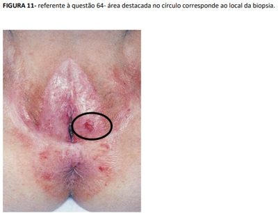
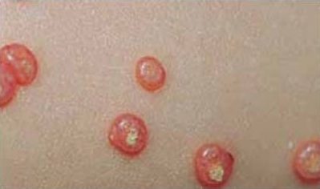
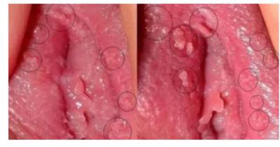
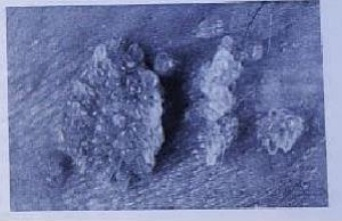
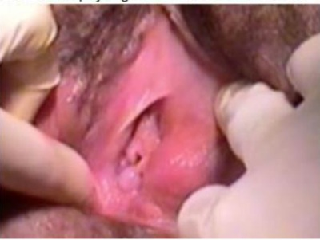
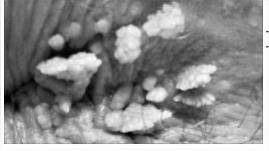
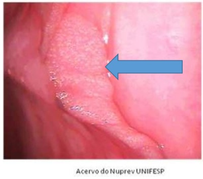
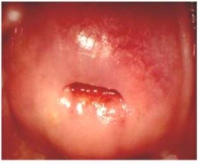
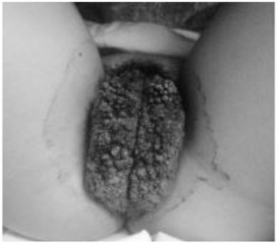

Questão 1 · Neoplasia intraepitelial vulvar NIV · 4000184321Mulher, 58a, com quadro de prurido vulvar crônico há 10 anos, comparece em consulta de retorno para avaliação de resultado de biopsia de lesão vulvar, cujo diagnóstico foi neoplasia intraepitelial diferenciada. Exame ginecológico: ( 11 , anexo. Área biopsiada destacada).

A Líquen escleroso da vulva.
B Papilomavírus humano tipos 6 e 11.
C Papilomavírus humano tipos 16 e 18.
D Doença de Paget invasiva.
Questão 2 · Câncer de vulva · 4000182124Mulher de 68 anos, queixa-se de prurido vulvar há cerca de 8 meses. A inspeção genital está representada na imagem. Diante do quadro clínico e do exame físico, qual a melhor conduta?

A Exérese completa com margem de 3 mm.
B Biópsia incisional da borda da lesão.
C Corticosteroide de alta potência.
D Antibioticoterapia com penicilina benzatina.
Questão 3 · Câncer de vulva · 4000181275O câncer de vulva representa 3-5 % das neoplasias ginecológicas malignas, chegando até 8%, em razão do aumento da expectativa de vida. Em relação ao câncer de vulva, assinale a alternativa correta.
A Menarca precoce e menopausa tardia são fatores de risco.
B A via carcinogênica mais importante é a HPV induzida.
C O sintoma mais comum é o prurido de longa duração.
D O carcinoma escamoso de vulva queratinizante é o que ocorre em mulheres jovens.
E O atual sistema de estadiamento é clínico.
Questão 4 · Doenças de vulva e vagina · 4000166165Uma paciente de sessenta anos de idade, G6P4A2, queixa-se de prurido vulvar há cerca de dois anos. Exame ginecológico: lesão hipopigmentada de 2 cm no terço médio do grande lábio esquerdo. Foi realizada uma biópsia da lesão, cujo diagnóstico foi o de NIV diferenciada. Com base nesse caso hipotético, é correto a rmar que a terapêutica recomendada é o(a)
A radioterapia, que, após a excisão da lesão, é necessária devido à multicentricidade da doença.
B ablação com
C tratamento inicial com imiquimode.
D excisão, com bisturi, com margens.
E vulvectomia simples.
Questão 5 · Líquen escleroso · 4000164964A respeito do tratamento de líquen escleroso vulvar, deve-se considerar o uso tópico de:
A corticóide de alta potência
B estrogênio
C progesterona
D testosterona
Questão 6 · Condiloma · Papilomavírus humano HPV · 4000164269Primigesta, 16 anos, 21 semanas, refere lesões na vulva há 30 dias. Na consulta Unidade Básica de Saúde, a avaliação da genitália evidencia as lesões mostradas na figura 1. Qual a melhor conduta para esse caso?

A Ácido tricloacético 80%.
B Podofilotoxina.
C Expectante.
D Imiquimode.
Questão 7 · Doenças de vulva e vagina · 4000145557Sobre as lesões da vulva, dentre as afirmações abaixo descritas, assinale a alternativa CORRETA.
A A vulvoscopia é dispensável na suspeita de líquen escleroatrófico
B O líquen escleroatrófico apresenta risco de malignização
C O líquen escleroatrófico está associado à exposição excessiva ao estrogênio
D O uso de corticoide é a primeira linha de tratamento no caso de líquen plano
Questão 8 · Líquen escleroso · 4000144400Paciente com 60 anos de idade apresenta prurido crônico vulvar, e seu exame físico apresenta mancha branca e espessa envolvendo toda a vulva. A conduta é:
A Citologia esfoliativa.
B Biópsia.
C Corticoide.
D Testosterona tópica.
Questão 9 · Doenças das glândulas de Bartholin · 4000139835Paciente de 33 anos procura o pronto atendimento de ginecologia e obstetrícia (PAGO) do Hospital de Clínicas da UFPR com queixa de algia intensa, febre aferida acima de 38 ºC, sensação de bola na entrada da vagina e leucocitose de 24.000 cel/microL. Ao exame ginecológico, foi observado tumoração cística de 5 cm à direita, dolorosa, com edema e hiperemia de grandes e pequenos lábios vulvares, além de ponto de flutuação e linfadenopatia inguinal homolateral dolorosa. A conduta adequada para esse caso é:
A bartolinectomia associada com antibióticos de largo espectro.
B ablação com nitrato de prata, compressa morna e assepsia do local e controle.
C internação imediata, início de antibiótico de largo espectro e tratamento cirúrgico de drenagem.
D compressa morna, anti-inflamatórios e tratamento cirúrgico de bartolinectomia.
E tratamento ambulatorial com antibióticos de largo espectro e anti-inflamatórios.
Questão 10 · Estadiamento · 4000138130Segundo o estadiamento da Federação Internacional de Ginecologia e Obstetrícia 2009 (FIGO) para o carcinoma de vulva, as lesões com mais de 2 cm ou com invasão do estroma maior que 1 mm, limitadas à vulva ou ao períneo, com linfonodos negativos deve ser classificada em qual estágio?
A IA.
B IB.
C II.
D IIA.
E IVA.
Questão 11 · Líquen escleroso · 4000129754A respeito do líquen escleroso vulvar, assinale a alternativa
A Geralmente apresenta manchas hipercrômicas simétricas.
B O propionato de testosterona a 8% tópico é a primeira linha do tratamento.
C A maioria dos casos ocorre em mulheres pós-menopáusicas.
D corticoterapia oral é o tratamento mais recomendado e com menor risco de recidiva.
E Sua duração é autolimitada e o prurido não é frequente.
Questão 12 · Condiloma · 4000129562Mulher de 20 anos comparece à primeira consulta ginecológica com queixa de prurido vulvar ocasional há alguns dias. Relata corrimento vaginal de longa data, sem relação com fase do ciclo menstrual. Faz uso de contraceptivo injetável mensal desde a sexarca aos 17 anos. Ao exame, apresenta vulva sem hiperemia, com presença de pequenas lesões papilomatosas espiculadas, de coloração semelhante à pele, em região perineal. Conteúdo vaginal esbranquiçado, escasso, sem odor, não aderido às paredes vaginais. Colo sem lesões. Qual a conduta adequada a seguir?
A Coletar exame citopatológico.
B Solicitar genotipagem para HPV.
C Aplicar ácido tricloroacético a 90%.
D Realizar bacterioscopia a fresco do conteúdo vaginal.
Questão 13 · Doenças de vagina · 4000120328Nas afecções que acometem a vagina:
A A principal neoplasia maligna vaginal é o adenocarcinoma de células claras, que se manifesta na pós-menopausa.
B Cistos vaginais raramente se manifestam clinicamente e, quando ocorrem, têm grande chance de malignidade.
C Formações verrucosas são comuns, principalmente no 1/3 médio da vagina e se manifestam por sangramentos irregulares.
D Os quadros infecciosos são os mais prevalentes, principalmente a candidíase, a vaginose bacteriana e a infecção por HPV.
E Os prolapsos das paredes vaginais aumentam o risco de aparecimento de câncer na vagina, por alteração do pH.
Questão 14 · Molusco contagioso · 4000119808Adolescente de 17 anos refere surgimento há quatro semanas de lesões assintomáticas na base do pênis, com extensão para raiz de coxas e hipogástrio (imagem a seguir). Tem história de contato sexual desprotegido há seis semanas. O diagnóstico e a proposta terapêutica são:

A molusco contagioso; curetagem.
B verruga genital (HPV); cauterização com ácido tricloroa-cético 90%.
C sífilis primária (cancro duro); penicilina benzatina 2400000 UI intramuscular dose única.
D herpes genital; aciclovir 400 mg cinco vezes por dia por 7 dias.
Questão 15 · Diretrizes do rastreamento mamográf ico · 4000112794Em relação ao exame ginecológico está incorreto:
A O exame físico das mamas deve ser feito rotineiramente apenas após aos 40 anos de idade da paciente, ou quando houver queixa específica.
B Os dados relacionados à pilificação da paciente são importantes. Por exemplo, o hirsutismo pode estar associado à Síndrome dos Ovários Policísticos.
C Politelia é um termo usado para o achado de mamilos extranumerários.
D O carcinoma de mama geralmente propaga-se por via linfática, o que justifica a necessidade de inspeção e palpação de linfonodos axilares e supraclaviculares durante o exame das mamas.
E Edema, dor e vermelhidão no coxim gorduroso dos grandes lábios pode estar associado à bartolinite gonocócica.
Questão 16 · Líquen escleroso · 4000095671A dermatose inflamatória de vulva descrita como lesão pruriginosa, hipocrômica, brilhante, nacarada, causando aderência na linha mediana e estreitando o introito vaginal é?
A Líquen escleroso
B Epitélio acetobranco
C Condiloma plano
D Vitiligo
Questão 17 · Doenças das glândulas de Bartholin · 4000084455A bactéria que mais comumente infecta o cisto e provoca o abscesso de glândula de Bartholin é a:
A estreptococo beta hemolítico
B Chlamydia trachomatis
C Neisseria gonorrhoeae
D Escherichia coli
Questão 18 · Líquen escleroso · 4000083434Paciente de 60 anos com quadro de prurido vulvar há cerca de 6 meses. Já usou por conta própria creme definistatina sem melhora. Ao exame físico observa-se lesão hipocrômica acometendo sulco interlabial e região perianal, além de um adelgaçamento de pequenos lábios. O diagnóstico clínico da paciente é:
A Vitiligo.
B Líquen simples.
C Doença de Paget vulvar.
D Líquen escleroso.
Questão 19 · Câncer de vagina · 4000080583A Condilomatose conhecida como tumor de Buscke-Lowenstein apresenta as seguintes características, EXCETO:
A É considerada variante de carcinoma espinocelular verrucoso.
B Associada geralmente aos HPVs 6 e 11.
C Adquirem tamanhos grandes com crescimento lento.
D Geralmente acometem indivíduos imunocompetentes.
Questão 20 · Vacinas · Condiloma · HPV · 4000077693Assinale a alternativa correta, a respeito do HPV.
A É frequente a transmissão por fômites, bem como durante o parto.
B Apesar de ser uma infecção rara, é importante devido ao potencial oncogênico.
C A prevalência é maior em mulheres acima de 30 anos.
D A maioria das infecções leva ao desenvolvimento de verrugas anogenitais.
E A imunização contra HPV faz parte do Calendário Nacional de Vacinação.
Questão 21 · Tipos histológicos · 4000076478A moléstia de Paget da vulva é:
A Neoplásica.
B Inflamatória.
C Metaplásica.
D Degenerativa.
E Traumática.
Questão 22 · Líquen escleroso · 4000074370Mulher, 35 anos, queixando-se de prurido intenso em genitália, apresenta, ao exame ginecológico, lesões em placa hipoacrômica, de aspecto nacarado, discretamente endurecida em vulva. Indique, respectivamente, o diagnóstico e tratamento corretos.
A Atrofia branca de Milian, clobetasol tópico.
B Liquen escleroatrófico, clotrimazol tópico.
C Atrofia branca de Milian, clotrimazol tópico.
D Liquen escleroatrófico, clobetasol tópico.
Questão 23 · Líquen escleroso · 4000073825Maria, 60 anos, apresenta prurido vulvar há 6 meses. Ao exame: lesão hipocrômica em clitóris, pequenos lábios e perianal em formato de ""8"", além de pequena sinequia de pequenos lábios. Qual provável diagnóstico:
A Líquen plano.
B Líquen escleroso.
C Vitiligo.
D Psoríase.
Questão 24 · Câncer de vulva · Neoplasia intraepitelial vulvar NIV · 4000068220Sobre a Neoplasia Intraepitelial Vulvar (NIV) avalie as afirmativas: I- A vulvectomia pode ser utilizada como tratamento. II- A Doença de Paget da Vulva acomete principalmente mulheres brancas na pós-menopausa. III- O melanoma disseminado superficial é diagnóstico diferencial da Doença de Paget da Vulva. Estão corretas:
A Apenas a afirmativa I está correta.
B Apenas a afirmativa II está correta.
C Apenas a afirmativa III está correta.
D Apenas as afirmativas I e II estão corretas.
E As afirmativas I, II e III estão corretas.
Questão 25 · Condiloma · 4000052133Mulher com vida sexual ativa, chega à emergência referindo prurido vulvar intenso, sensação de queimação local. Ao exame observam-se inúmeras verrugas vulvares. Conduta:
A Prescrever a vacina para o vírus HPV
B Internar e realizar exérese ampla das lesões
C Solicitar teste rápido para sífilis; se negativo, encaminhar ao ambulatório para cauterização das lesões
D Iniciar antibióticos
Questão 26 · Estadiamento · Tratamento · 4000007429Uma mulher de 78 anos de idade apresenta lesão numular de 1,5 cm em grande lábio direito. Submeteu-se à biópsia incisional ambulatorial que revelou carcinoma espinocelular com invasão estromal de 0,5 mm. A conduta recomendada é
A Radioterapia locoregional exclusiva, uma vez que o risco cirúrgico é elevado.
B Vulvectomia simples direita e remoção do linfonodo sentinela inguinal isilateral.
C Vulvectomia radical e remoção do linfonodo sentinela inguinal bilateral.
D Ressecção ampliada da lesão com margem de 2cm, dispensando linfadenectomia.
E Cauterização química ou elétrica da lesão e excisão cirúrgica se houver recidiva.
Questão 27 · Tratamento · Adolescentes · 4000007379Uma adolescente de 15 anos de idade procura o ginecologista para orientação contraceptiva. Refere que seus pais desconhecem que tem atividade sexual e que não pretende contar a eles. Durante o exame ginecológico, são encontradas verrugas genitais suspeitas de HPV. Após esclarecer as dúvidas da jovem quanto à vida sexual com segurança, o ginecologista deve
A Prescrever contraceptivo, biopsiar e tratar as lesões suspeitas com autorização da paciente.
B Solicitar a presença de um familiar responsável para prescrever o contraceptivo e tratar as lesões.
C Prescrever o contraceptivo, mas solicitar a um responsável que autorize a realização da biópsia.
D Orientar o uso de preservativo, cauterizar as lesões verrucosas e esclarecer sobre a necessidade da presença de um adulto responsável para prescrição de medicamentos.
E Avisar os responsáveis a respeito da suspeita de HPV por se tratar de doença sexualmente transmissível antes de instituir qualquer tratamento.
Questão 28 · Doenças das glândulas de Bartholin · 4000006339A glândula de Bartholin está localizada no terço interior dos grandes lábios. Quando seu ducto é obstruído, forma-se um cisto, geralmente assintomático, podendo eventualmente se manifestar como desconforto ou mesmo dor ao sentar ou nas relações sexuais. Qual a conduta diante de um caso:
A Se assintomático ou com sintomas leves, orientar quanto a benignidade do quadro e evitar banhos de assento
B Se assintomático ou com sintomas leves, orientar quanto a possível malignidade do quadro, observar e tratar com banhos de assento e analgésicos
C Se sintomático a cirurgia de marsupialização não é indicada
D Usar antibióticos apenas se suspeita de IST, presença de abscesso ou em caso de recorrências
Questão 29 · Manif estações clínicas · Tratamento · Diagnóstico · 4000004984Paciente de 18 anos é atendida na USF com queixa de aparecimento de lesões, destacadas na figura abaixo. Assinale a alternativa correta:

A Trata-se de candidíase vulvar e o tratamento correto deverá utilizar fluconazol oral e creme vaginal contendo miconazol;
B Trata-se de infecção mista e o tratamento correto deverá utilizar tinidazol oral e creme vaginal contendo nistatina;
C Trata-se de condiloma, causado pelo HPV e o tratamento recomendado é a aplicação de gama-interferon, devido à quantidade maciça de lesões;
D Trata-se de de condiloma, causado pelo HPV e o tratamento recomendado é a aplicação de ácido tricloroacético em concentração não inferior a 80%;
E Não é possível definir a infecção, o correto seria utilização de creme vaginal contendo antifúngico, antibacteriano e antiprotozoário.
Questão 30 · Tipos histológicos · Manif estações clínicas · 4000124673Mulher de 85 anos de idade queixa-se de prurido vulvar intermitente, há mais de três anos, que piorou nos últimos meses. Ao exame, observase pequena lesão ulcerada de 1 cm no grande lábio direito. Pela frequência, espera-se encontrar em exame histológico:
A Melanoma.
B Carcinoma basocelular.
C Sarcoma.
D Carcinoma escamoso.
Questão 31 · Líquen escleroso · 4000120320Menina de 9 anos, pré-púbere, apresenta prurido na região genital há quatro meses. Utilizou nistatina tópica sem melhora. Exame físico: área acrômica de quatro centímetros de diâmetro em região interna dos grandes lábios, com discretas fissuras. A principal hipótese diagnóstica e o respectivo tratamento são:
A vitiligo; fototerapia com UVA
B trauma local; investigar abuso sexual.
C líquen escleroso; corticosteroide tópico.
D esclerodermia; metotrexato oral.
Questão 32 · Tratamento · 4000115739Jovem, 16 anos de idade, conta que há 2 semanas surgiram lesões exo licas em vulva, semelhantes a "cristas de galo". Ao exame: múltiplas verrugas genitais em topogra a de lábios menores, bilateralmente (foto da lesão reproduzida a seguir). Diante da situação apresentada, indique a alternativa correta com relação à suspeita diagnóstica e ao tratamento, respectivamente, conforme o Protocolo Clínico e Diretrizes Terapêuticas do Ministério da Saúde.

A Herpes genital; aciclovir
B Donovanose; doxiciclina
C Condiloma acuminado; ácido tricloroacético
D Síflis, penicilina benzatina
E Linfogranuloma venéreo; azitromicina
Questão 33 · Tratamento · 4000100305Paciente de 25 anos de idade, gestante de 30 semanas, apresentando condiloma acuminado em vulva. Dos tratamentos abaixo, qual é contra-indicado para esta paciente?
A Ácido tricloro-acético (ATA) a 50%
B Eletrocauterização
C 5-fluorouracil
D Excisão das lesões com bisturi de alta frequência
Questão 34 · Estadiamento · Tratamento · 4000095928Mulher de 65 anos com carcinoma de vulva invasivo com 3 cm de diâmetro, sem evidência de disseminação linfática. Qual deve ser o tratamento inicial de escolha?
A Quimioterapia.
B Radioterapia.
C Vulvectomia simples.
D Vulvectomia radical sem linfadenectomia inguinal.
E Vulvectomia radical parcial com linfadenectomia inguinal bilateral.
Questão 35 · Líquen escleroso · 4000085687Paciente de 52 anos, na pós-menopausa, refere prurido vulvar há um ano associado à dispareunia, com espessamento da pele e ssuras. Exame físico: mancha hipocrômica em grandes lábios com extensão para região perineal e atro a de pequenos lábios. Realizada biópsia com diagnóstico de líquen escleroso vulvar. A terapêutica inicial, mais adequada, para esta paciente é:
A Estrogenioterapia local
B Corticoide tópico de alta potência.
C Hidratantes ou emolientes locais.
D Anti-histamínico por via oral.
Questão 36 · Vias de disseminação · 4000079069A neoplasia intraepitelial da vulva, mais conhecida pela sigla VIN, que deriva da sua denominação inglesa “vulvar intraepithelial neoplasia”, é uma entidade patológica reconhecida há mais de 20 anos pela International Society for Study of Vulvo-vaginal Diseases (ISSVD). O interesse médico pela VIN se acentuou na última década, dado o reconhecimento do crescente aumento da incidência da doença, especialmente em mulheres jovens, e pelo desenvolvimento de novas terapêuticas médicas dirigidas ao tratamento primário. Na neoplasia de vulva, as metástases para linfonodos intrapélvicos são mais frequentes quando a lesão localiza-se
A nos pequenos lábios.
B nos grandes lábios.
C no clitóris.
D na comissura posterior.
Questão 37 · Líquen escleroso · 4000073244Paciente, 50 anos, relata desconforto acompanhado de prurido na região anogenital há 8 meses. História de hipertireoidismo. Ao exame físico, hipocromia vulvar e perineal, áreas de queratose e atro a dos pequenos lábios, coalescência com os grandes lábios. Hipótese diagnóstica:
A Candidíase.
B Hipoestrogenismo.
C Esclerodermia.
D Líquen escleroatrófico.
E Líquen crônico simples.
Questão 38 · Condiloma · 4000073229Paciente, 20 anos, comparece no serviço de ginecologia devido aparecimento de verrugas genitais. MAC:ACO. Ao exame físico, múltiplos pequenos condilomas na vulva. Realizado os testes rápidos para ISTs, reagente para sí lis. Fez VDRL, não reagente. História de tratamento para sífilis. Marque a alternativa correta quanto as condutas, respectivamente:
A ATA; tratar sífilis.
B Podofilina; tratar sífilis.
C Imiquimode; não tratar sífilis.
D Ressecção das lesões vulvares; não tratar sífilis.
E Laser; tratar sífilis.
Questão 39 · Vias de disseminação · 4000070678A neoplasia de vulva é incomum e o tipo histopatológico mais prevalente é o epidermoide. A disseminação neoplástica pode ocorrer por três vias: linfática, hematogênica e locorregional. Os linfáticos da vulva e do terço distal da vagina drenam geralmente para os linfonodos:
A inguinais superficiais
B inguinais profundos
C femorais profundos
D ilíacos internos
Questão 40 · Condiloma · 4000070474Lactente de 10 meses foi levada ao pediatra com quadro de lesões verrucosas perianais de início há um mês, que foram aumentando em quantidade. A mãe, 14 anos, refere que ele nasceu no parto vaginal, assistido por pediatra, sem complicações, permanecendo em aleitamento materno exclusivo até 2 meses. Por vezes, a bebê cava sozinha com o avô paterno. Foi verificado que o calendário vacinal está em dia, e que no cartão de acompanhamento pré-natal há registro de oito consultas, sem intercorrências. O laudo de exame colposcópico, realizado com seis meses de gestação, mostrou lesão NIC grau I. Ao exame físico, a criança está em bom estado geral, mas apresenta lesões condilomatosas acuminadas em região perianal. O restante do exame físico apresentou resultado normal. Diante desse caso, a principal hipótese diagnóstica é de:
A Infecção por HPV de transmissão perinatal.
B Infecção por HPV por abuso sexual.
C Sífilis por abuso sexual.
D Sífilis congênita.
Questão 41 · NIV usual · 4000068488Mulher, 35 anos, procura atendimento médico com queixa de prurido vulvar. Ao exame clícnico apresenta lesões policrômicas, papulosas em placas confluentes acometendo 1/3 médio de grande lábio esquerdo. É submetida à biópsia que revela tratar-se de lesão intraepitelial escamosa vulvar de alto grau (NIV usual). O tipo de HPV mais comumente envolvido e o respectivo tratamento indicado são os seguintes:
A HPV 11/ vulvectomia parcial.
B HPV 11/ vulvectomia total com linfadenectomia inguinal do lado da lesão.
C HPV 16 / excisão ampla com linfadenectomia inguinal do lado da lesão.
D HPV 18 / excisão ampla com linfadenectomia inguinal do lado da lesão.
E HPV 16 / excisão ampla da lesão com margem de segurança.
Questão 42 · Conceitos iniciais · Vascularização pélvica · 4000065547A pele e o tecido subcutâneo do monte púbico são irrigadas pela artéria
A uterina.
B vaginal.
C femoral.
D pudenda externa.
E glútea inferior.
Questão 43 · Líquen escleroso · 4000064808Paciente de 55 anos comparece à consulta com queixa de prurido vulvar há 1 ano. Realizou vários tratamentos por conta própria com diferentes cremes vaginais, sem sucesso. Faz tratamento para diabetes e hipotireoidismo. Está divorciada, é sexualmente ativa e refere última menstruação há 3 anos. Ao exame ginecológico você observa uma área hipopigmentada e atró ca envolvendo introito vaginal, clitóris, pequenos lábios, região perianal e face interna dos grandes lábios, em formato de ampulheta. Qual o tratamento mais adequado?
A Fluconazol 150 mg via oral.
B Estriol 1% creme vaginal.
C Cetoconazol 2% + betametasona 0,05% tópico.
D Clobetasol 0,05% tópico.
Revisar: possível letra faltando em enunciado
Questão 44 · Tratamento · Abordagem da paciente com queixa de úlcera genital · Cancro mole · 4000062506Dentre as patologias vulvares, as mais comuns se manisfestam pela presença de úlceras ou verrugas. Marque a a rmativa INCORRETA.
A Todas as mulheres com úlceras genitais devem ser submetidas a teste sorológico para sífilis, objetivando prevenir a forma terciária desta doença e a sífilis congênita.
B Vesículas agrupadas misturadas a pequenas úlceras, sobretudo com história prévia dessas mesmas lesões, são quase sempre patognomônicas de herpes genital.
C As verrugas genitais externas são uma manifestação de infecção pelo HPV e o objetivo do tratamento deve ser a erradicação da infecção viral, por seu risco oncogênico.
D Úlcera única, indolor, de bordo regular e endurecido é sugestiva de sífilis enquanto úlcera única ou múltipla, dolorosa, de bordo irregular com linfadenopatia inguinal sugere cancróide.
Questão 45 · Vias de disseminação · 4000053674Os linfonodos mais frequentemente acometidos, em relação ao câncer de vulva são os:
A Pelvicos
B Para-aorticos
C Inguinofemorais
D Ilíacos externos
Questão 46 · Líquen escleroso · Vaginose bacteriana · Diagnóstico · 4000052265Assinale a alternativa correto:
A A ressonância magnética é a modalidade de imagem preferencial para a avaliação inicial de massas anexiais.
B A vaginose pela Gardnerella é uma condição em que há um predomínio de bactérias aeróbias e não é causa importante de prurido vulvar.
C O líquen escleroso é uma inflamação crônica cujo sintoma chave é o prurido vulvar.
D A adenomiose é a infiltração profunda do miométrio por tecido endometrial (glandular e estromal) sendo o diagnóstico suspeitado pelos achados histológicos da peça cirúrgica.
E A doença inflamatória pélvica caracteriza-se por dor no abdômen inferior, febre e hemograma alterado, sendo o seu diagnóstico fácil e preciso.
Questão 47 · Padrão de disseminação · Fisiopatologia · Terapia adjuvante · 4000049087Sobre as neoplasias ginecológicas, assinale a opção CORRETA.
A A disseminação por via linfática é a principal forma de propagação do câncer de ovário.
B O câncer de endométrio possui lesão precursora estabelecida e passível de prevenção.
C O câncer de vulva é mais prevalente em mulheres jovens e tem o HPV como seu principal agente etiológico.
D A quimioterapia tem papel importante no tratamento do câncer do colo uterino.
E A radioterapia não tem indicação no tratamento do câncer de ovário.
Questão 48 · Tratamento · Tipos histológicos · 4000047549Sobre o carcinoma da vulva, assinale a alternativa CORRETA:
A O tipo histológico mais frequente é o carcinoma queratinizante.
B O melanoma de vulva é o quarto câncer invasivo de vulva mais frequente.
C A Doença de Paget vulvar invasiva não está relacionada as células apócrinas.
D No tumor de Buscke Löwestein de comportamento maligno, não se deve indicar radioterapia porque os raios ionizantes provocam transformação da célula diplóide em aneuplóide.
E O tratamento preconizado para o Adenocarcinoma de glândula de Bartholin é a Bartholinectomia associado a radioterapia local.
Questão 49 · Estadiamento · 4000042788Mulher de 71 anos, com carcinoma escamoso da vulva e lesão de 1 cm, adjacente ao meato uretral e com metástases para linfonodos inguinais bilaterais. O estadiamento correto pelos critérios da FIGO (Federação Internacional de Ginecologia e Obstetrícia) será:
A III A
B IV A
C II B
D III B
Questão 50 · Doenças das glândulas de Bartholin · 4000038595Coco gram negativo que pode causar Bartholinite,
A estafilococo.
B gonococo.
C trichomonas.
D mobiluncus.
Questão 51 · Doenças das glândulas de Bartholin · 4000024110Em um quadro de Bartholinite aguda, o tratamento imediato mais recomendado é:
A Bartholinectomia.
B Punção e antibiótico.
C Antibioticoterapia e calor local.
D Drenagem e antibiótico.
Questão 52 · Doenças de vulva e vagina · 4000022075Sobre a anatomia da vulva, pode-se afirmar que:
A As glândulas de Skene se localizam na superfície interna dos grandes lábios;
B As glândulas de Bartholin originam-se do ducto menosonéfricos;
C Os lábios maiores são homólogos à próstata;
D Os pequenos retalhos do hímen, restantes após o parto são chamados de carúnculas
Questão 53 · Líquen escleroso · 4000018612Paciente 52 anos, refere prurido vulvar resistente ao uso de medicamentos. Ao exame é observado diminuição da gordura subcutânea da vulva, atro a das formações vulvares, os pequenos lábios ausentes e sepultamento do clitóris. Qual o provável diagnóstico?
A Líquen escleroso.
B Líquen plano.
C Candidíase vaginal crônica.
D Distrofia hiperplásica.
E Doença de Paget.
Questão 54 · Molusco contagioso · 4000011752Jéssica, 11 anos, é levada à consulta com Pediatra devido ao surgimento de lesões papulares umbilicadas, de tamanhos variados (3 mm a 1 cm de diâmetro), em abdome, há cerca de 3 semanas. Sua genitora a rma que inicialmente eram poucas, que vem aumentando seu número e que são assintomáticas. Qual a hipótese diagnóstica mais provável e qual a melhor conduta a ser tomada para Jéssica?
A Prurigo estrófulo, devendo ser utilizado corticoide tópico.
B Nódulo escabiótico, devendo ser utilizado anti-histamínico.
C Molusco contagioso, devendo ser realizada curetagem das lesões.
D Verruga filiforme, devendo ser utilizada solução à base de ácidos salicílico e lático.
E Condiloma acuminado, devendo ser utilizada solução à base de ácidos salicílico e lático.
Questão 55 · Tratamento · Diagnóstico · 4000006160Outros fatores necessitam ser considerados no momento da decisão terapêutica das lesões induzidas pelo HPV, como preferência do paciente, custos, disponibilidade de recursos, conveniência, efeitos adversos e experiência do pro ssional de saúde. Sobre isso, está inadequado o item:
A As verrugas anogenitais localizadas em superfícies úmidas e/ou nas áreas intertriginosas respondem pior à terapêutica tópica (ex.: ácido tricloroacético – ATA, podofilina) que as verrugas em superfícies secas.
B Deve-se mudar de opção terapêutica quando um paciente não apresentar melhora significativa após três sessões, ou se as verrugas não desaparecerem após seis sessões.
C Menos frequentemente, podem estar presentes em áreas extragenitais, como conjuntivas, mucosa nasal, oral e laríngea.
D A infecção por um genótipo de HPV não impede a infecção por outros tipos de HPV. O tratamento deve basear- se nos mesmos princípios referidos para os não- imunossuprimidos.
Questão 56 · Tratamento · Diagnóstico · 4000006155O objetivo principal do tratamento das lesões anogenitais induzidas pelo HPV é a remoção das lesões clínicas. Não sendo adequado o seguinte item:
A Se não houver esse tratamento, os condilomas podem desaparecer, permanecer inalterados ou aumentar em tamanho ou número.
B Nenhuma evidência indica que os tratamentos disponíveis erradicam ou afetam a história natural da infecção do HPV.
C Como o carcinoma escamoso costuma surgir mais raramente em imunossuprimidos, valoriza-se a biópsia de lesões nesse grupo.
D O tratamento das lesões anogenitais induzidas pelo HPV deve ser individualizado, considerando tamanho, morfologia, número e local das lesões.
Questão 57 · Líquen escleroso · 4000125372Quanto ao líquen escleroso vulvar, é correto afirmar que:
A apresenta lesões planas, pruriginosas e esverdeadas.
B é causado geralmente pelo HPV tipo 8 e 16.
C o corticoide tópico está contraindicado.
D a etiologia é incerta e o risco de aparecimento de câncer vulvar é inferior a 5%.
E é mais frequente durante a menacme, sendo raro na infância e na pós-menopausa.
Questão 58 · Patologias vulvares · 4000124460Durante exame físico de uma paciente de 70 anos, com prurido vulvar há vários anos, identi cou-se na vulva uma lesão avermelhada, com bordas elevadas e halo de epitélio branco. Qual a conduta mais adequada?
A Solicitar colposcopia pelo risco evidente de infecção por HPV de alto grau.
B Tratar o prurido com anti-histamínicos sistêmicos.
C Reavaliar a lesão após 30 dias de estrógeno tópico devido a menopausa.
D Realizar cauterização com laser de CO2.
E Realizar biópsia com anestesia local.
Questão 59 · Sinéquia de pequenos lábios · 4000110936Mãe procura a UBS pois notou alteração na genitália de sua lha de 2 anos, relatando"fechamento" da vagina. Ao exame físico, nota-se que os pequenos lábios estão unidos por uma linha na distinta de demarcação ou rafe entre eles. Feito o diagnóstico de sinéquia labial, assinale a alternativa correta:
A A causa da aderência labial é desconhecida, embora o hiperestrogenismo esteja envolvido.
B O tratamento das sinéquias labiais varia de acordo com o grau de fibrose e os sintomas, raramente apresentado resolução espontânea.
C A separação manual da sinéquia labial em ambiente ambulatorial, sem analgesia, é recomendada.
D A secção de lábios fundidos, também chamada introitoplastia, pode ser realizada em casos selecionados, envolvendo incisão em linha média com eletrocautério, sendo posteriormente suturado com fio absorvível.
E Essa aderência desenvolve-se em 1 a 5% das meninas de qualquer idade na fase pré- puberal e em cerca de 10% dos lactentes do sexo feminino no primeiro ano de vida.
Questão 60 · Líquen escleroso · 4000104266Paciente de 60 anos comparece ao ambulatório de ginecologia com queixa de prurido vulvar. Ao exame ginecológico, apresenta vulva atró ca, com presença de mácula hipocrômica em face interna de grandes lábios bilateralmente que se estende até região perineal e perianal. Nesse caso, o diagnóstico mais provável é de:
A psoríase
B líquen escleroso
C candidíase vulvar
D dermatite seborreica
Revisar: possível letra faltando em enunciado
Questão 61 · Doenças das glândulas de Bartholin · 4000103544Mulher de 37 anos de idade refere aparecimento de "bolinha" na vulva há 1 semana, que limita a deambulação e a atividade sexual. A inspeção genital está mostrada abaixo. Qual é o tratamento adequado para o caso?

A Aspirado por punção.
B Biópsia por agulha grossa.
C Marsupialização.
D Ressecção ampla com margem livre.
Questão 62 · Introdução e f atores de risco · Tipos histológicos · Vias de disseminação · 4000088298O câncer de vulva, é raro, sendo responsável por 3 a 5% das neoplasias malignas do trato genital feminino, o que corresponde a menos de 1% dessas neoplasias. Em relação a essa neoplasia, é correto afirmar:
A o câncer de vulva pode se disseminar a partir do sítio inicial por meio da invasão local, mas a disseminação se dá principalmente por via hematogênica, atingindo pulmões, fígado e ossos.
B a localização mais comum da lesão é no pequeno lábio, com taxa de incidência de 50%; em seguida, na fúrcula, com incidência entre 15% a 20%, no clitóris e na glândula de Bartholin.
C o tipo histológico mais frequente é o carcinoma epidermoide, responsável por, aproximadamente, 85% das ocorrências, seguido pelo melanoma.
D a incidência estimada é de 10 a 20 casos por 100.000 mulheres/ano, com maior frequência entre mulheres com idade superior a 60 anos, quando a taxa aumenta para 50 casos por 100.000 mulheres/ano.
Questão 63 · Líquen escleroso · 4000083673O tratamento do líquen escleroso vulvar:
A Não necessita de biópsia prévia.
B Com androgênios é a melhor alternativa.
C Obtém boa resposta terapêutica em menos da metade dos casos.
D Deve ser realizado de preferência com corticosteróides de alta potência.
E A vulvectomia é a primeira opção.
Questão 64 · Líquen escleroso · 4000074429Qual das alternativas, a seguir, informa a doença vulvar crônica com maior risco de malignidade?
A Líquen simples crônico.
B Líquen escleroso.
C Doença de Behçet.
D Líquen plano.
Questão 65 · Estadiamento · Tratamento · 4000070506Uma paciente de 70 anos, com lesão ulcerada no terço médio do grande lábio esquerdo, de 1,5 cm no maior diâmetro e com linfonodos inguinais clinicamente negativos, recebeu diagnóstico por biópsia de carcinoma escamoso de vulva com invasão do estroma menor que 1,0 mm³. O tratamento adequado para essa paciente, de acordo com o estágio dessa lesão, é:
A Excisão local ampla.
B Vulvectomia radical.
C Hemivulvectomia com uretrectomia segmentar distal.
D Excisão local ampla com linfadenectomia inguinofemoral bilateral.
Questão 66 · Tipos histológicos · 4000069130Estão relacionados com a epidemiologia de câncer basalóide ou verrucoso da vulva, exceto:
A Mulheres abaixo de 55 anos
B Baixo nível sócioeconômico
C HPV oncogênico
D Tabagismo
E Liquen escleroso
Questão 67 · Líquen escleroso · 4000062075Mãe procura o ambulatório de ginecologia trazendo lha de 7 (sete) anos que apresenta ao exame da região genital, lesão hipopigmentada, simétrica, com pele atrófica com aspecto de pergaminho e fissuras. Qual é o possível diagnóstico:
A Herpes simples
B Cancroide
C Linfogranuloma venéreo
D Líquen escleroso
E Molusco contagioso
Questão 68 · Condiloma · 4000048937Assinale a opção que indica o agente causador do condiloma acuminado:
A Papilomavirus
B Dermatófitos
C Herpesvírus
D Parvovírus
E Zontevirus
Questão 69 · Doenças das glândulas de Bartholin · 4000046917Com relação aos cistos da glândula de Bartholin, assinale a alternativa CORRETA.
A Quanto a sua etiopatologia, podemos afirmar que as bactérias mais comumente encontradas são a Neisseria gonorrhoeae e Chlamydia trachomatis.
B Devemos extirpá-los independentemente do seu tamanho, pois, no período de excitação sexual da mulher, eles se tornam muito volumosos e dolorosos.
C A terapia com antibióticos, após incisão e drenagem dos cistos de Bartholin, deve ser usada até mesmo nos casos em que a celulite não esteja presente.
D Quando o tratamento inclui incisão e drenagem, marsupialização, em mulheres com 40 anos ou mais, recomenda- se a biópsia devido ao risco de adenocarcinoma de Bartholin.
E O epitélio de transição dos ductos e os traumas não são considerados fatores etiológicos.
Questão 70 · Doenças de vagina · 4000007533O cisto de Gardner localiza-se no(a):
A Canal cervical uterino.
B Ovário.
C Parede lateral da vagina.
D Porção distal das tubas uterinas.
Questão 71 · Estadiamento · Tratamento · 4000002087Mulher de 65 anos com carcinoma de vulva invasivo com 3 cm de diâmetro sem evidência de disseminação linfática. Qual deve ser o tratamento inicial de escolha?
A Quimioterapia.
B Radioterapia.
C Vulvectomia simples.
D Vulvectomia radical sem linfadenectomia inguinal.
E Vulvectomia radical parcial com linfadenectomia inguinal bilateral.
Questão 72 · Câncer de vulva · 4000000712Das seguintes lesões vulvares, qual é considerada como Neoplasia?
A Lipoma.
B Hidroadenoma papilar.
C Fibroma.
D Doença de Paget vulvar.
Questão 73 · Líquen simples crônico · 4000125041Qual o tratamento de escolha para o líquen vulvar crônico simples?
A Creme de clotrimazol 10 mg/g.
B Prednisona oral, 10 mg/dia.
C Imunoterapia.
D Pomada de propionato de clobetasol 0,05%.
E Metronidazol oral ou tópico.
Questão 74 · NIV dif erenciada · 4000093270G.L.S., 60 anos, procura o serviço devido história de prurido vulvar crônico. Ao exame físico, presença de áreas hipocrômicas na vulva com lesão única de aspecto verrucoso. Tem citologia negativa. Provável diagnóstico (s) e conduta:
A Condiloma; biópsia.
B Condiloma; cauterização da lesão.
C Candidíase e condiloma; antifúngico e biópsia.
D Líquen esclero-atrófico e niv; vulvoscopia.
E Vulvite diabética; controle do diabetes.
Questão 75 · Líquen escleroso · 4000072974Mulher de 60 anos, na menopausa, apresenta pápulas atró cas esbranquiçadas, que coalescem em determinadas regiões com formação de placas de "porcelana" e distorcem a anatomia normal. Após biópsia da área em questão e confirmação da hipótese diagnóstica, o médico deve iniciar o tratamento com:
A Metronidazol gel a 0,75%, com aplicação uma vez ao dia, durante uma semana.
B Clindamicina creme 2%, com aplicação uma vez ao dia, durante quatro semanas.
C Testosterona gel 12,5 mg, com aplicação na lesão duas vezes ao dia, durante uma semana.
D Propionato de clobetasol a 0,05%, com aplicação na lesão duas vezes ao dia, durante quatro semanas.
Revisar: possível letra faltando em enunciado
Questão 76 · Doenças das glândulas de Bartholin · 4000068860A Bartolinite é uma infeção comum da mulher no menacme e pode surgir de maneira repentina. Quais os achados sugestivos de Bartolinite ao exame físico:
A Massa vulvar próximo à uretra.
B Celulite da pele do pequeno lábio próximo ao introíto vaginal (às 5 horas).
C Massa ao toque profundo com palpação abdominal.
D Linfonodos na região inguinal.
Questão 77 · Líquen escleroso · 4000068785Prurido vulvar é uma queixa frequente no consultório. Ao examinar uma paciente com história de prurido vulvar há 2 anos, queixa de dispaurenia, história de outras alergias (incluindo dermatite de contato por bijuterias) e uso de pomadas e cremes com corticoides (baixa potência) para melhora do prurido, você identi ca a presença de 3 placas espessadas e esbranquiçadas no pequeno lábio direito, perto do clitóris. A paciente relata que em uma consulta anterior, há 6 meses, o médico já havia informado que existia uma placa. Diante disso você deve:
A Ficar tranquilo e orientar a paciente que se trata do mesmo problema que ela tem no restante do corpo.
B Trocar a medicação para corticoides de alta potência.
C Explicar à paciente que nesse caso é comum aparecer novas lesões devido à alergia.
D Fazer uma biópsia para identificar, do ponto de vista anatomopatológico, o problema da paciente.
Revisar: possível letra faltando em enunciado
Questão 78 · Vulvoscopia · 4000065098Para realização de biópsia de vulva, utiliza-se para orientação, o teste de Collins, que é feito com:
A Lugol e ácido acético.
B Solução de Shiller e hidróxido de potássio.
C Azul de toluidina e ácido acético.
D Lugol e azul de toluidina.
E Solução de Shiller e azul de toluidina.
Questão 79 · Fatores prognósticos · 4000064687O fator prognóstico isolado mais importante no câncer de vulva é:
A profundidade de invasão tecidual
B metástase linfonodal
C tamanho da lesão
D grau nuclear
Questão 80 · Síndrome de Behçet · 4000061315A patologia caracterizada por lesões cutaneomucosas (ocular, oral e genital), associada à vasculite sistêmica, é denominada como:
A Acantose nigricante.
B Doença de Crohn.
C Doença de Behçet.
D Líquen plano.
E Líquen escleroatrófico.
Questão 81 · Interpretação e conduta f rente as atipias citológicas · Introdução e f atores de risco · 4000055357Neoplasia intraepitelial vulvar NIV Durante o climatério também é importante a avaliação periódica objetivando-se diagnosticar precocemente enfermidades decorrentes de doenças sexualmente transmissíveis. Assim, relativa às doenças atípicas do trato genital inferior, pode-se afirmar que:
A A colposcopia, evidenciando mosaico grosseiro irregular, relaciona-se à infecção pelo HIV.
B O câncer epidermoide vulvar associa-se, comumente, ao líquen escleroso da vulva.
C O carcinoma epidermoide cervical não é lesão HPV-induzida.
D Colpocitologia oncótica positiva significa conização como passo seguinte.
E A lesão intraepitelial vulvar de alto grau relaciona-se diretamente ao herpes-vírus.
Questão 82 · Vias de disseminação · 4000053980O câncer de vulva é um tumor maligno que atinge a parte externa do aparelho reprodutor feminino. A vulva é formada pelos lábios maiores, lábios menores, clitóris e intróito vaginal. Na vulva está localizada a abertura da uretra, canal que conduz urina da bexiga ao meio externo. Câncer da vulva é uma neoplasia rara, responsável por 0,5% de todos os cânceres nas mulheres e 5% dos tumores ginecológicos. Aproximadamente 90% dos cânceres de vulva são carcinomas epidermóides. Os demais casos compreendem adenocarcinomas, melanomas, sarcomas e carcinomas basocelulares. Em relação ao câncer de vulva, os linfonodos mais frequentemente acometidos são os:
A Ilíacos externos.
B Ilíacos comuns.
C Inguinofemorais.
D Para-aórticos.
E Pélvicos.
Questão 83 · Tratamento · 4000052114Observe a imagem abaixo para responder à questão (Conforme imagem do caderno de questões). Paciente de 29 anos, refere aparecimento de “bolinhas” na vulva há 1 semana. No exame físico, evidenciaram lesões expostas na imagem acima. O tratamento indicado para o caso acima, é

A Aciclovir.
B Ácido Bórico.
C Ácido Acético.
D Ácido Tricloroacético.
E Metotrexate.
Questão 84 · Doenças de vulva e vagina · Rastreamento do câncer de colo do útero · Câncer de colo do útero · 4000051288Sobre a fase do climatério relativa às doenças atípicas do trato genital inferior, atribua V (verdadeiro) ou F (falso) às afirmativas a seguir. ( ) Colposcopia, evidenciando mosaico grosseiro irregular, relaciona-se à infecção pelo HPV; ( ) O câncer epidermoide vulvar associa-se, comumente, ao líquen escleroso da vulva; ( ) O carcinoma epidermoide cervical é lesão HPV-induzida; ( ) Colpocitologia oncótica positiva significa conização como passo seguinte; ( ) A lesão intraepitelial vulvar de alto grau relaciona-se diretamente ao herpes-vírus. Assinale a alternativa que contém, de cima para baixo, a sequência correta.
A V, V, V, F, F.
B V, F, V, V, F.
C V, F, F, V, F.
D F, V, V, F, V.
E F, F, F, V, V.
Questão 85 · Condiloma · Papilomavírus humano HPV · 4000050961Durante a gestação, devemos tratar os condilomas acuminados com:
A Solução de podofilina a 4% em gel.
B Creme de 5-fluorouracil a 5%.
C Pomada de podofilotoxina, para inativar o vírus.
D Diatermocauterização das lesões ou ácido tricloroacético a 70%.
E Solução de ácido metacresossulfônico ou ATA a 60%.
Questão 86 · Câncer de vulva · Tratamento · Tipos histológicos · 4000040828Sobre as doenças que acometem a vulva, é CORRETO afirmar que:
A A doença de Paget vulvar é a neoplasia mais frequente da vulva e apresenta crescimento rápido
B O câncer de vulva acomete as pacientes principalmente durante a menacme
C O tipo histológico que acomete as pacientes idosas tem íntima relação com infecção pelo vírus HPV
D O carcinoma de células escamosas tem como tratamento convencional a excisão cirúrgica vulvar e linfadenectomia inguinofemoral
Questão 87 · Câncer de vagina · 4000023398Uma criança de dois anos com sangramento vaginal leve e corrimento fétido, com lesão polipoide e friável em fundo de saco vaginal, que à ultrassonogra a se apresenta como tumoração complexa de 2cm em parede fúndica-lateral esquerda, tem como hipótese diagnóstica mais provável:
A Corpo estranho.
B Tumor botrioide.
C Vaginite granulomatosa
D Sarcoma vaginal.
Questão 88 · Líquen escleroso · 4000020257Paciente de 55 anos queixa-se de prurido vulvar intenso há vários anos que, por vezes, interfere no sono. Ao exame, apresenta lesão brancacenta bem delimitada, envolvendo vulva e ânus, em forma de “8”. Ao exame especular, a mucosa vaginal está íntegra. Neste caso:
A A hipótese mais provável é líquen plano.
B A biópsia é obrigatória para confirmar o diagnóstico.
C O tratamento de escolha é o corticoide tópico de alta potência.
D A alta ambulatorial é programada após a remissão dos sintomas.
Questão 89 · Doenças de vagina · 4000007347Mulher de 23 anos de idade apresentou no passado diagnóstico de lesão de baixo grau no colo uterino e foi submetida a tratamento destrutivo. Atualmente apresenta esfregaço cervicovaginal de lesão de alto grau. Onde está a lesão e qual a conduta?


A Na parede vaginal direita e deverá ser biopsiada.
B No fórnice vaginal e deve ser mantida em observação.
C No canal endocervical e a conduta é expectante.
D No canal endocervical e deve-se biopsiar.
E No septo embriológico residual e deve-se realizar vaginoplastia.
Questão 90 · Fatores de risco · 4000000108Dentre os abaixo, qual NÃO se constitui em fator de risco para neoplasia intraepitelial vaginal (NIVA)?
A Tratamento prévio para neoplasia intraepitelial.
B Radioterapia prévia para câncer de colo uterino.
C Tabagismo.
D Adenose vaginal.
Questão 91 · Tratamento · 4000126541M. J., 27 anos, solteira, gestação, parto e aborto zero. Tabagista. Vida sexual ativa. Usa o anticoncepcional Depo-provera. Procurou a Unidade Básica de Saúde (UBS) para avaliar o aparecimento de lesão vulvar, vegetante, pruriginosa há 2 semanas, que vem aumentando em número e tamanho. Após avaliação do exame clínico, o médico diagnosticou condiloma vulvar. Para o tratamento dessa condição clínica, pode-se afirmar que NÃO se usa:
A Eletrocautério.
B Aplicação de Ácido Acético 5%.
C Aplicação de Podofilina.
D Criocautério.
Questão 92 · Condiloma · 4000123824Mulher de 20 anos, G1P0, 36 semanas de idade gestacional, chega à consulta do Projeto Nascer referindo aparecimento de uma lesão verrucosa crescente em região vulvar (VER IMAGEM), sem tratamento pelo ginecologista da UBS. A paciente refere di culdade de deambulação. Biópsia do local mostra células sem características de malignidade, com vacúolos citoplasmáticos perinaviculares e núcleos de grande diâmetro. Sobre a doença clínica apresentada na imagem, assinale a opção INCORRETA:

A Existe um risco elevado de papilomatose laríngea caso a via obstétrica seja a vaginal, devido ao tamanho e à carga viral da lesão.
B O tratamento com imiquimode poderia ser uma ótima opção para essa paciente, com potencial regressão da lesão e possibilidade da via obstétrica.
C A cesariana seria a melhor opção para essa paciente, pois não haveria tempo de regressão após tratamento cirúrgico com exérese da lesão.
D A doença apresenta mais de 120 sorotipos, sendo 40 deles voltados para a região genital. O subtipo apresentado poderia ser o tipo 6 e 11.
E A eletrocauterização não é tratamento indicado durante a gestação.
Questão 93 · Tipos histológicos · 4000123032O carcinoma espinocelular corresponde a menos de 20% dos carcinomas de vulva, porque o carcinoma de vulva mais prevalente é o adenocarcinoma.
A As duas assertivas estão incorretas.
B A primeira assertiva está correta e a segunda está incorreta.
C A primeira assertiva está incorreta e a segunda está correta.
D As duas assertivas estão corretas e a segunda não justifica a primeira.
E As duas assertivas estão corretas e a segunda justifica a primeira.
Questão 94 · Líquen escleroso · 4000111755Líquen escleroso e uma dermatose mais comum em que faixa de idade feminina:
A Pré-púbere.
B Puerpério.
C Pós-menopausa.
D Menacme com vida sexual ativa.
E Jovem após a menarca.
Questão 95 · Câncer de vulva · 4000098898Sobre o câncer de vulva é CORRETO afirmar:
A Prurido vulvar e vulvodínea são manifestações clínicas incomuns.
B O melanoma é o tipo histológico mais frequente.
C O carcinoma verrucoso é uma variante do carcinoma epidemoide e tende a dar metástase linfonodal.
D Pode estar relacionado à infecção pelo HPV.
Questão 96 · Líquen escleroso · 4000086369O tratamento do líquen escleroso da vulva tem o objetivo de prevenir:
A Alterações anatômicas e transformação maligna.
B Tricomoníase e candidíase recorrente.
C Transformação maligna e tricomoníase.
D Vaginose bacteriana e alterações anatômicas.
E Candidíase recorrente e vaginose bacteriana.
Questão 97 · Vias de disseminação · 4000074827No câncer de vulva, as metástases para linfonodos intrapélvicos são mais observadas, quando a localização é
A Pequenos lábios.
B Grandes lábios.
C Clitoridiana.
D Perineal.
E Fúrcula.
Questão 98 · Líquen escleroso · 4000064614Uma mulher de 58 anos procura o consultório médico devido prurido vulvar. No exame ginecológico da genitália, você observa uma pele fina, parecendo enrugada, atrófica, coloração esbranquiçada em toda vulva. Dos diagnósticos abaixo, qual é o diagnóstico mais provável:
A Dermatite de contato.
B Psoríase vulvar.
C Acrocórdon de vulva.
D Líquen escleroso de vulva.
E Vulvite atrófica.
Questão 99 · Manif estações clínicas · 4000063703Paciente queixa-se de prurido vulvar iniciado há cinco anos. Ao exame, observa-se mancha hipocrômica extensa acometendo face interna dos lábios maiores e apagamento dos lábios menores, com lesão ulcerada próxima ao clitóris. A hipótese diagnóstica e conduta imediata são:
A Sífilis / Administrar penicilina benzatina.
B Herpes genital / Aplicar aciclovir.
C Câncer de vulva / Realizar biópsia da lesão.
D Donovanose / Prescrever vibramicina.
E Doença de Behçet / Tratar com corticoide.
Questão 100 · Quadro clínico · Câncer de vagina · Diagnóstico · 4000058127Associe a sintomatologia ao diagnóstico e assinale a alternativa correta: 1 - Sangramento genital pós-menopausa; 2- Sinusorragia; 3 - Dor Abdominal esporádica; 4 - Dietilestibestrol (DES); 5 - Beta-hCG. I. Cancer de colo uterino; II Cancer de ovário; III. Cancer de endométrio; IV. Neoplasma trofoblástrica; V. Adenose Vaginal. Respostas: 1 12 23 34 45 56 67 78 89 100
A 1-III; 2-I; 3-IV; 4II; 5-V.
B 1-II; 2-V; 3-I; 4-III; 5-IV.
C 1-IV; 2-V; 3-I; 4-III; 5-V.
D 1-II; 2-III; 3-I; 4-V; 5-IV.
E 1-III; 2-I; 3-II; 4-V;5-IV.